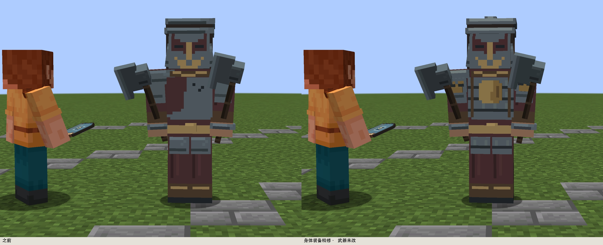
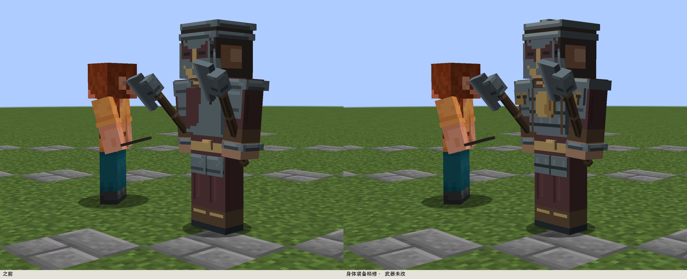
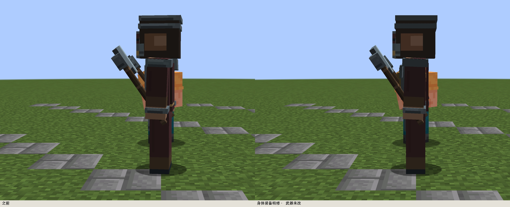
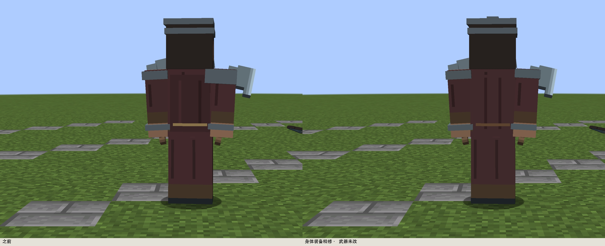
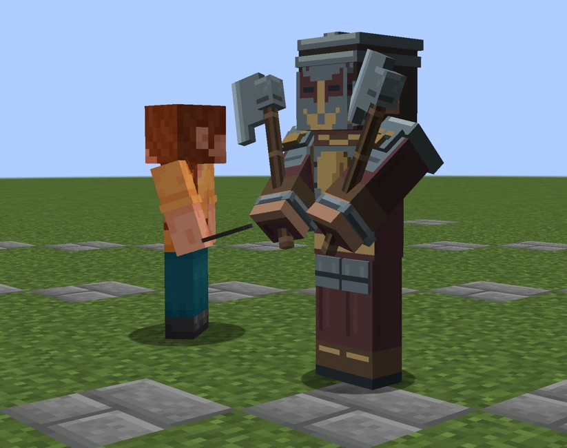
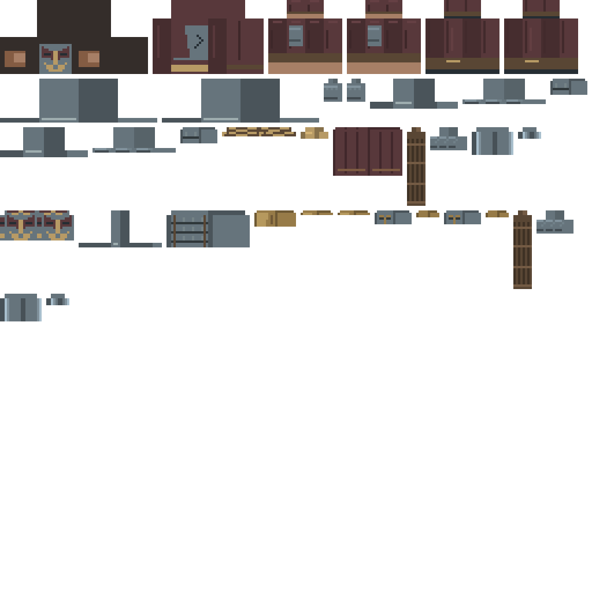

保留史蒂夫六主体、当前体型与武器。补齐 cod1 的兽吞肩甲和铜质护心镜，叠札胸甲与暗朱后衣拉开材质。无领域、无新粒子，不修改技能和伤害。
以下为实际Forge客户端同机位对照，玩家同框。武器几何与逐面像素均未修改；新增装备导致部分UV岛移位。




关闭AI的同步动作检查，包含蓄势、攻击和恢复，不代替自然战斗或多人验证。


未改武器/主体的检查记录 · 客户端检查cod1整项仍为PARTIAL：本轮没有删去整只护卫的功能和验收要求。